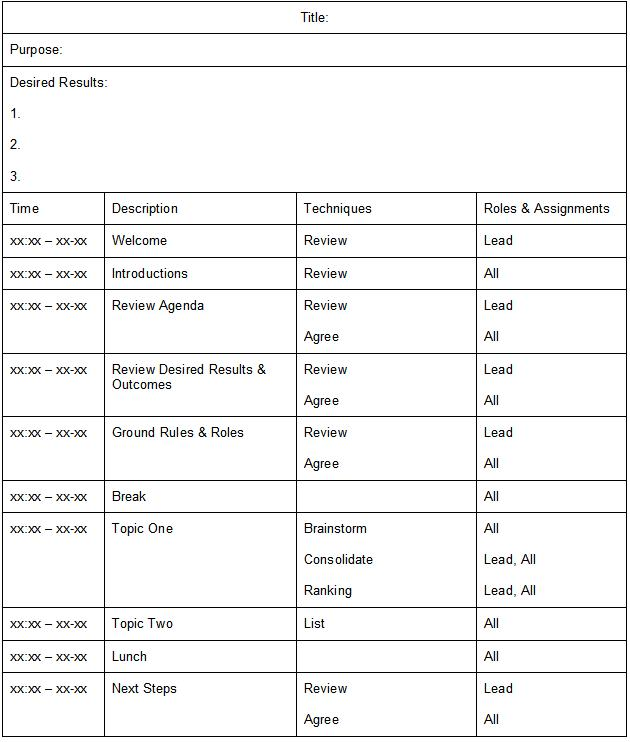

| Guideline: Preparing for Workshops |
 |
|
1 DescriptionTypesThe types of workshops vary greatly over the breadth of engagement types and client requirements. This technique paper provides general guidance to any workshop situations and does not attempt to discuss specific facilitation techniques relative to specific project content. The Guide should include:
2 PurposeThe purpose of this technique paper is to provide some practical guidance in the construction of agendas and selection of supporting materials. It is meant to support the development of a quick reference that the workshop participants (both IBM, client, and third party attendees) can use throughout the workshop to remind them of the process approach being used and how participant contributions will be most productive. 3 ContextThis technique assists the consultant in planning a “strawman” agenda, gaining consensus of that agenda for the session duration, and then used for executing a workshop that successfully establishes and meets the client expectations. By publishing established sufficient process guidance to facilitate the workshop results being achieved, with roles and “voting rules” up front the intended bounds of participant responses and scoring scales can be represented, agreed to, and enforced. It should be a concise quick reference guide used by participants throughout the workshop. 4 Steps4.1 Describe purpose of the workshopDescribe the purpose and objectives of the workshop – what it goals are and how they will be reached, and their importance in guiding the subsequent work. 4.2 Define the workshop desired resultsDescribe the scope of the desired results of the workshop, especially as it relates to the identified stakeholder groups and time frames – what the outcomes are and how they will be documented. 4.3 Identify session ground rules and roles to manage participationIdentify and review workshop ground rules and housekeeping logistics (e.g., telephone access and use, message center facilities, scheduling interruptions). Ground rules that manage participation could be as specific as:
Or have a much broader focus, such as:
Define and review workshop roles, responsibilities, and assignments. At a minimum lead facilitator, scribe, timekeeper, voting members, and tiebreaker, if applicable, should be identified. 4.4 Define the workshop execution plan and scoring criteria, if applicable
Define and review key workshop topics, and the role assignments and process approaches associated with each. 4.5 Review workshop guide with participantsVerify that the client understands the purpose and objectives of the workshop – what it goals are and how they will be reached, and their importance in guiding the subsequent work. Solicit consensus for these objectives, and amend as required. Validate the scope of the desired results of the workshop, with participants. Solicit consensus for these results, and amend as required. Review workshop roles, ground rules and housekeeping logistics. Confirm these roles and ground roles with participants. Solicit consensus for these results, and amend as required.
Confirm role assignments and process mechanics with participants. Solicit consensus for these results, and amend as
required. 5 Validation and Verification
Validation and verification should be is done by the consultant team prior to the workshop, before presenting the
agenda. All consultants on the team should review the guide and feel comfortable discussing any section within
the guide. 6 ExamplesThe following is a template “strawman agenda” for a workshop  7 Advice and GuidanceA workshop guide is extremely important in most projects when workshops are first being held or when a different process/method will be used during the workshop. However, in projects where workshops are either not required or not applicable, a Workshop Guide would not be necessary. Or where, the client organization or another vendor or another IBM consulting organization is facilitating this interaction and can provide it in documented form. Use of a workshop guides that was created for prior workshops to the same goals can greatly reduce the amount of time required to develop a new workshop guide. However content and approach should always be tailored to the participant audience, and consensus making rules established and agreed to. Keep the Workshop Guide short but informative so that the client will want to use it as a quick reference during the workshop. 8 Estimating ConsiderationsWorkshop session planning, execution, and post-delivery activity duration can vary widely from project to project depending upon the scope and length of the workshop in question. A general rule of thumb therefore, would be, the number of planned session facilitators with equal duration each for the planning, execution, and post-delivery activities. That is, a two-day workshop would take 2 days to plan, 2 days to execute, and 2 days to follow-up for the level of effort assigned. |
| © Copyright IBM Corp. 1987, 2012 All Rights Reserved Property of IBM These materials are intended only for use as part of an IBM engagement |